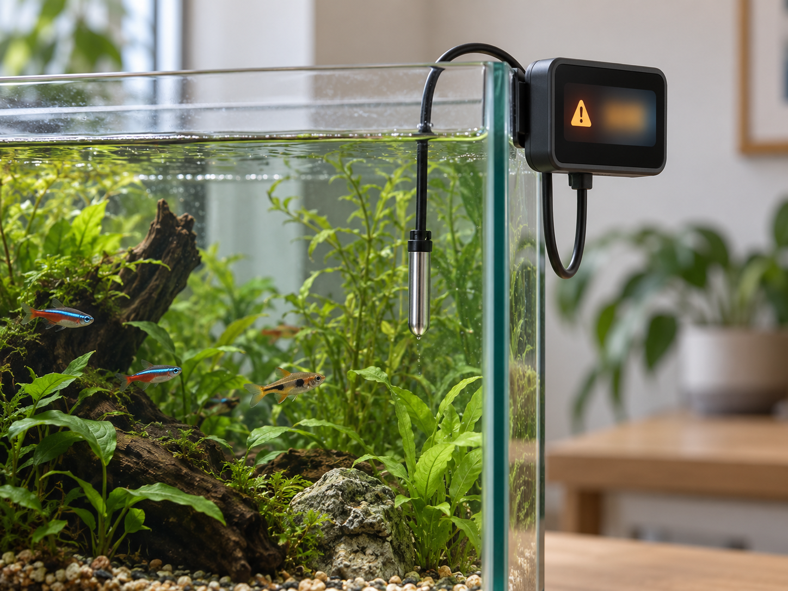
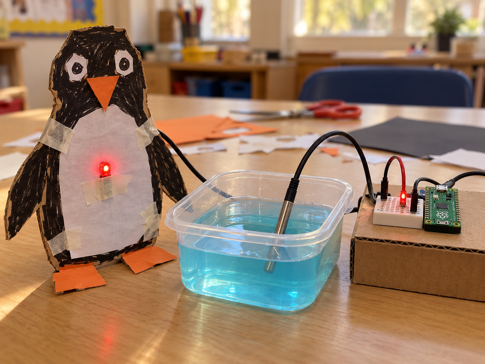

Aquarium temperature alarm
DetectMeasure tank temperature
DecideIs it too cold?
DoShow a warning
A DS18B20 measures temperature and sends a digital reading in degrees Celsius.
This probe has a sealed metal tip on a cable with three wires. Check the supplier's pinout; wire colours can vary.
Only the sealed probe goes in water. Keep the board and all wire connections dry.


from w1thermsensor import W1ThermSensor
sensor = W1ThermSensor()
temperature = sensor.get_temperature()
print(temperature)from machine import Pin
import onewire, ds18x20
from time import sleep_ms
bus = onewire.OneWire(Pin(28))
sensor = ds18x20.DS18X20(bus)
probes = sensor.scan()
assert probes, "Check probe wiring"
sensor.convert_temp()
sleep_ms(750)
temperature = sensor.read_temp(probes[0])
print(temperature)raspi-config, reboot, then run sudo apt install python3-w1thermsensor. Pico: repeat the conversion and 750 ms wait for each new reading.